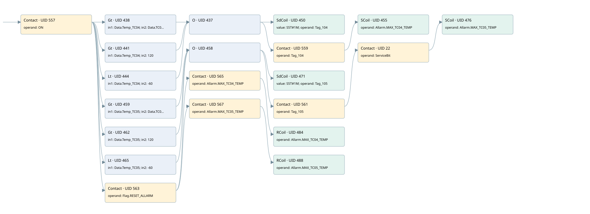

max tc04 temperature
allarms 3 · 검색 색인 순서 3 · 원본 내부 NID 추정 3
백업 PLF 원본의 3166897 바이트 위치에서 복원한 XML. 검색 문서 1981의 객체 키 16102200736b000000000000와 연결했다. 이름 해석 27/27개. 남은 RefId는 상수 또는 미해석 참조다.
연결 구조 다시 그리기
원본 Part/PCon/Wire를 이용한 연결도다. TIA 화면의 래더 배치 또는 실행 결과를 재현한 그림은 아니다. 핀 연결은 아래 표와 원본 XML을 기준으로 읽는다. 노드 위에 마우스를 두면 피연산자 이름을 볼 수 있다.

접점·코일·블록과 피연산자
| Part UID | Gate | Negated 핀 | 연결 피연산자 |
|---|---|---|---|
| 557 | Contact | operand = ON | |
| 438 | Gt | in1 = Data.Temp_TC04; in2 = Data.TC04_TC05_MAX_ALL | |
| 441 | Gt | in1 = Data.Temp_TC04; in2 = 120 | |
| 444 | Lt | in1 = Data.Temp_TC04; in2 = -60 | |
| 437 | O | ||
| 450 | SdCoil | value = S5T#1M; operand = Tag_104 | |
| 559 | Contact | operand = Tag_104 | |
| 455 | SCoil | operand = Allarm.MAX_TC04_TEMP | |
| 459 | Gt | in1 = Data.Temp_TC05; in2 = Data.TC04_TC05_MAX_ALL | |
| 462 | Gt | in1 = Data.Temp_TC05; in2 = 120 | |
| 465 | Lt | in1 = Data.Temp_TC05; in2 = -60 | |
| 458 | O | ||
| 471 | SdCoil | value = S5T#1M; operand = Tag_105 | |
| 561 | Contact | operand = Tag_105 | |
| 22 | Contact | operand = ServiceBit | |
| 476 | SCoil | operand = Allarm.MAX_TC05_TEMP | |
| 563 | Contact | operand = Flag.RESET_ALLARM | |
| 565 | Contact | operand = Allarm.MAX_TC04_TEMP | |
| 484 | RCoil | operand = Allarm.MAX_TC04_TEMP | |
| 567 | Contact | operand = Allarm.MAX_TC05_TEMP | |
| 488 | RCoil | operand = Allarm.MAX_TC05_TEMP |
접점 경로를 펼친 조건식
Contact·O/A·비교기의 원본 연결을 읽기 쉽게 펼친 보조 해석이다. POWER는 전원 레일 시작을 뜻한다. 호출 블록·에지·타이머의 내부 동작과 다중 쓰기 순서는 이 표로 실행 검증하지 않았다. 미해석 핀과 RefId는 원문 연결표에서 확인한다.
| UID | 동작 | 대상 | 원본 접점 경로 | 내용 |
|---|---|---|---|---|
| 450 | SdCoil | Tag_104 | ((ON AND [Data.Temp_TC04 > Data.TC04_TC05_MAX_ALL]) OR (ON AND [Data.Temp_TC04 > 120]) OR (ON AND [Data.Temp_TC04 < -60])) | 시간 동작 SdCoil; 타이머 의미 추가 확인 / 시간 인자 S5T#1M |
| 455 | SCoil | Allarm.MAX_TC04_TEMP | (((ON AND [Data.Temp_TC04 > Data.TC04_TC05_MAX_ALL]) OR (ON AND [Data.Temp_TC04 > 120]) OR (ON AND [Data.Temp_TC04 < -60])) AND Tag_104) | 조건 성립 시 Set |
| 471 | SdCoil | Tag_105 | ((ON AND [Data.Temp_TC05 > Data.TC04_TC05_MAX_ALL]) OR (ON AND [Data.Temp_TC05 > 120]) OR (ON AND [Data.Temp_TC05 < -60])) | 시간 동작 SdCoil; 타이머 의미 추가 확인 / 시간 인자 S5T#1M |
| 476 | SCoil | Allarm.MAX_TC05_TEMP | ((((ON AND [Data.Temp_TC05 > Data.TC04_TC05_MAX_ALL]) OR (ON AND [Data.Temp_TC05 > 120]) OR (ON AND [Data.Temp_TC05 < -60])) AND Tag_105) AND ServiceBit) | 조건 성립 시 Set |
| 484 | RCoil | Allarm.MAX_TC04_TEMP | ((ON AND Flag.RESET_ALLARM) AND Allarm.MAX_TC04_TEMP) | 조건 성립 시 Reset |
| 488 | RCoil | Allarm.MAX_TC05_TEMP | ((ON AND Flag.RESET_ALLARM) AND Allarm.MAX_TC05_TEMP) | 조건 성립 시 Reset |
원본 배선 연결
| Wire UID | 동일 Wire 연결 끝점 |
|---|---|
| 569 | Powerrail {} ↔ Part 557.in |
| 515 | ORef 489 (ON) ↔ Part 557.operand |
| 558 | Part 557.out ↔ Part 438.pre ↔ Part 441.pre ↔ Part 444.pre ↔ Part 459.pre ↔ Part 462.pre ↔ Part 465.pre ↔ Part 563.in |
| 516 | ORef 490 (Data.Temp_TC04) ↔ Part 438.in1 |
| 517 | ORef 491 (Data.TC04_TC05_MAX_ALL) ↔ Part 438.in2 |
| 518 | Part 438.out ↔ Part 437.in1 |
| 519 | ORef 492 (Data.Temp_TC04) ↔ Part 441.in1 |
| 520 | ORef 493 (120) ↔ Part 441.in2 |
| 521 | Part 441.out ↔ Part 437.in2 |
| 522 | ORef 494 (Data.Temp_TC04) ↔ Part 444.in1 |
| 523 | ORef 495 (-60) ↔ Part 444.in2 |
| 524 | Part 444.out ↔ Part 437.in3 |
| 525 | Part 437.out ↔ Part 450.in ↔ Part 559.in |
| 526 | ORef 496 (S5T#1M) ↔ Part 450.value |
| 527 | ORef 497 (Tag_104) ↔ Part 450.operand |
| 528 | ORef 498 (Tag_104) ↔ Part 559.operand |
| 560 | Part 559.out ↔ Part 455.in |
| 530 | ORef 499 (Allarm.MAX_TC04_TEMP) ↔ Part 455.operand |
| 532 | ORef 500 (Data.Temp_TC05) ↔ Part 459.in1 |
| 533 | ORef 501 (Data.TC04_TC05_MAX_ALL) ↔ Part 459.in2 |
| 534 | Part 459.out ↔ Part 458.in1 |
| 535 | ORef 502 (Data.Temp_TC05) ↔ Part 462.in1 |
| 536 | ORef 503 (120) ↔ Part 462.in2 |
| 537 | Part 462.out ↔ Part 458.in2 |
| 538 | ORef 504 (Data.Temp_TC05) ↔ Part 465.in1 |
| 539 | ORef 505 (-60) ↔ Part 465.in2 |
| 540 | Part 465.out ↔ Part 458.in3 |
| 541 | Part 458.out ↔ Part 471.in ↔ Part 561.in |
| 542 | ORef 506 (S5T#1M) ↔ Part 471.value |
| 543 | ORef 507 (Tag_105) ↔ Part 471.operand |
| 544 | ORef 508 (Tag_105) ↔ Part 561.operand |
| 25 | Part 561.out ↔ Part 22.in |
| 27 | ORef 28 (ServiceBit) ↔ Part 22.operand |
| 26 | Part 22.out ↔ Part 476.in |
| 546 | ORef 509 (Allarm.MAX_TC05_TEMP) ↔ Part 476.operand |
| 548 | ORef 510 (Flag.RESET_ALLARM) ↔ Part 563.operand |
| 564 | Part 563.out ↔ Part 565.in ↔ Part 567.in |
| 549 | ORef 511 (Allarm.MAX_TC04_TEMP) ↔ Part 565.operand |
| 566 | Part 565.out ↔ Part 484.in |
| 551 | ORef 512 (Allarm.MAX_TC04_TEMP) ↔ Part 484.operand |
| 552 | ORef 513 (Allarm.MAX_TC05_TEMP) ↔ Part 567.operand |
| 568 | Part 567.out ↔ Part 488.in |
| 554 | ORef 514 (Allarm.MAX_TC05_TEMP) ↔ Part 488.operand |
식별자 해석 근거 27개
| ORef UID | RefId | 이름 | IdentXmlPart 파일 | 해석 방법 |
|---|---|---|---|---|
| 489 | 1 | ON | 0686-IdentXmlPart.xml | UID/RID + search-text + NID agreement |
| 490 | 43 | Data.Temp_TC04 | 0684-IdentXmlPart.xml | UID/RID + search-text + NID agreement |
| 491 | 44 | Data.TC04_TC05_MAX_ALL | 0684-IdentXmlPart.xml | UID/RID + search-text + NID agreement |
| 492 | 43 | Data.Temp_TC04 | 0684-IdentXmlPart.xml | UID/RID + search-text + NID agreement |
| 493 | 45 | 120 | 0683-IdentXmlPart.xml | literal candidate: UID/RID/NID + nearby named declarations + search-text agreement |
| 494 | 43 | Data.Temp_TC04 | 0684-IdentXmlPart.xml | UID/RID + search-text + NID agreement |
| 495 | 21 | -60 | 0683-IdentXmlPart.xml | literal candidate: UID/RID/NID + nearby named declarations + search-text agreement |
| 497 | 47 | Tag_104 | 0686-IdentXmlPart.xml | UID/RID + search-text + NID agreement |
| 496 | 46 | S5T#1M | 0683-IdentXmlPart.xml | literal candidate: UID/RID/NID + nearby named declarations + search-text agreement |
| 498 | 47 | Tag_104 | 0686-IdentXmlPart.xml | UID/RID + search-text + NID agreement |
| 499 | 48 | Allarm.MAX_TC04_TEMP | 0684-IdentXmlPart.xml | UID/RID + search-text + NID agreement |
| 500 | 49 | Data.Temp_TC05 | 0684-IdentXmlPart.xml | UID/RID + search-text + NID agreement |
| 501 | 44 | Data.TC04_TC05_MAX_ALL | 0684-IdentXmlPart.xml | UID/RID + search-text + NID agreement |
| 502 | 49 | Data.Temp_TC05 | 0684-IdentXmlPart.xml | UID/RID + search-text + NID agreement |
| 503 | 45 | 120 | 0683-IdentXmlPart.xml | literal candidate: UID/RID/NID + nearby named declarations + search-text agreement |
| 504 | 49 | Data.Temp_TC05 | 0684-IdentXmlPart.xml | UID/RID + search-text + NID agreement |
| 505 | 21 | -60 | 0683-IdentXmlPart.xml | literal candidate: UID/RID/NID + nearby named declarations + search-text agreement |
| 507 | 50 | Tag_105 | 0686-IdentXmlPart.xml | UID/RID + search-text + NID agreement |
| 506 | 46 | S5T#1M | 0683-IdentXmlPart.xml | literal candidate: UID/RID/NID + nearby named declarations + search-text agreement |
| 508 | 50 | Tag_105 | 0686-IdentXmlPart.xml | UID/RID + search-text + NID agreement |
| 28 | 161 | ServiceBit | 0686-IdentXmlPart.xml | UID/RID + search-text + NID agreement |
| 509 | 51 | Allarm.MAX_TC05_TEMP | 0684-IdentXmlPart.xml | UID/RID + search-text + NID agreement |
| 510 | 24 | Flag.RESET_ALLARM | 0684-IdentXmlPart.xml | UID/RID + search-text + NID agreement |
| 511 | 48 | Allarm.MAX_TC04_TEMP | 0684-IdentXmlPart.xml | UID/RID + search-text + NID agreement |
| 512 | 48 | Allarm.MAX_TC04_TEMP | 0684-IdentXmlPart.xml | UID/RID + search-text + NID agreement |
| 513 | 51 | Allarm.MAX_TC05_TEMP | 0684-IdentXmlPart.xml | UID/RID + search-text + NID agreement |
| 514 | 51 | Allarm.MAX_TC05_TEMP | 0684-IdentXmlPart.xml | UID/RID + search-text + NID agreement |
검색 코드 보조 자료
참조 명칭을 찾기 위한 자료이며 실행 순서나 AND/OR 관계는 위 연결표로 확인한다.
"on" "data".temp_tc04 "data".tc04_tc05_max_all "tag_104" s5t#1m "data".temp_tc04 120 "data".temp_tc04 -60 "data".temp_tc05 "data".tc04_tc05_max_all "tag_105" s5t#1m "tag_105" "servicebit" "allarm".max_tc05_temp "data".temp_tc05 120 "data".temp_tc05 -60 "flag".reset_allarm "allarm".max_tc04_temp "allarm".max_tc04_temp "allarm".max_tc05_temp "allarm".max_tc05_temp "tag_104" "allarm".max_tc04_temp